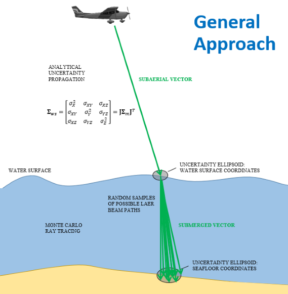
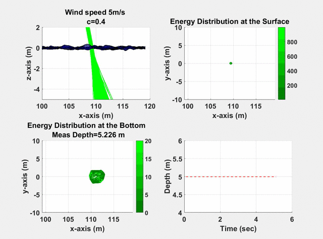

Overview¶
This tool computes the vertical total propagated uncertainty (TPU) of bathymetry acquired with a Riegl VQ-880-G topobathymetric lidar (other lidar systems will be included in future versions). The algorithm consists of subaerial and subaqueous components (see the figure below). Each component lends itself to a different approach to uncertainty propagation because of the relative complexity of the factors influencing the laser pulse travel path. Whereas the subaerial portion is a well-defined geometric problem that can be addressed using standard geomatics techniques, the subaqueous portion uses a Monte Carlo approach to model the complex interactions of light with water that are difficult to model analytically.
Image Credit: Chris Parrish
Subaerial Component¶
The subaerial component analytically computes the TPU of the laser pulse at the water surface using the equations shown below. The calculations include polynomial surface fitting to model the differences between the proprietary scan pattern and the implemented scan pattern.

Image Credit: Jaehoon Jung
Subaqueous Component¶
The subaqueous component stochastically computes the TPU of the laser pulse on the seafloor using Monte Carlo ray tracing based on surface modeling and estimates of scattering and absorption (see the figure below). To minimize the computational complexity of performing Monte Carlo simmulations for large numbers of data points (> 1 billion), the algorithm relies on pre-computed coefficient lookup tables.
Image Credit: Firat Eren